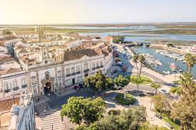

| A Ria Formosa atraiu humanos desde o Paleolítico até ao final da pré-história. Os primeiros assentamentos datam do século IV aC, durante o período da colonização fenícia do Mediterrâneo ocidental. Na época, a área era conhecida como Ossonoba , e era o mais importante centro urbano do sul de Portugal e porto comercial de produtos agrícolas, pescados e minerais. Entre os séculos II e VIII, a cidade esteve sob domínio dos romanos, depois dos bizantinos e, mais tarde, dos visigodos, antes de ser conquistada pelos muçulmanos de língua árabe conhecidos como mouros em 713. A partir do século III e durante no período visigótico , foi sede de uma sede episcopal , a Antiga Diocese de Ossonoba (306-688). A presença bizantina perdurou nas torres das muralhas da cidade que foram construídas durante o período bizantino. (Texto adaptado da Wikipedia |
 |